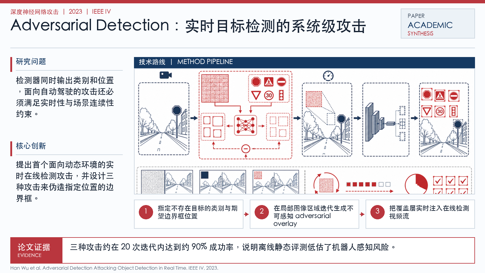

Problem
解决的问题
检测器同时输出类别和位置，面向自动驾驶的攻击还必须满足实时性与场景连续性约束。
Attacking on DNNs · 2023 · IEEE IV
Adversarial Detection Attacking Object Detection in Real Time
Problem
检测器同时输出类别和位置，面向自动驾驶的攻击还必须满足实时性与场景连续性约束。
Value
三种攻击约在 20 次迭代内达到约 90% 成功率，说明离线静态评测低估了机器人感知风险。
Paper-grounded Academic Summary
该代表页依据原文摘要、贡献段与方法图注生成。方法视觉由 ImageGen 按论文证据逐篇绘制，中文研究问题、技术路线、创新点与实验结论采用确定性排版，以保证内容与字符准确。
打开原文 PDF
Technical Route
Innovation